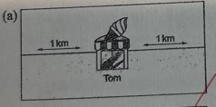
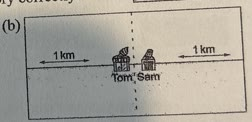
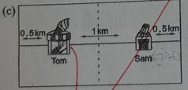
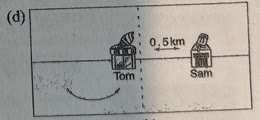
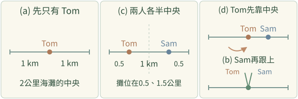
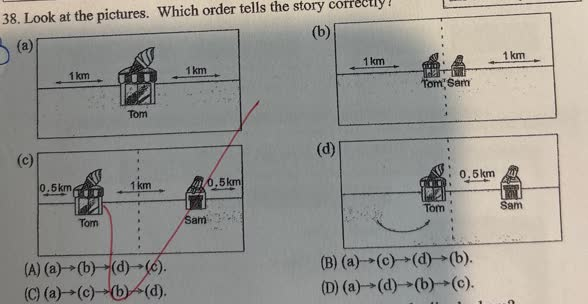

分享原卷｜第38題
完整原題
作答所需文章／材料
There is a 2-kilometer-long beach close to a beautiful blue sea. During summer, it is always full of people. The sun is shining and the sea water is warm. An ice cream seller, Tom, arrives. Where does he put his ice cream stand? Of course, he sets up the stand in the middle of the beach. This way, the visitors on the beach can easily walk to him. They don't have to walk more than 1 km to get his ice cream. Later, a second ice cream seller, Sam, arrives. Tom and Sam talk for a while, and they agree to divide the beach into two halves. They each put their ice cream stands in the middle of their half. The longest walk by any customers is less than 0.5 km. Then, Tom isn't happy he only has 50% of the business. He decides to go back to the middle of the beach. He puts his stand close to the middle of the beach again. So, Tom takes the lion's share of the beach and makes more money. Some of the customers in Sam's half can also buy from Tom conveniently. When Sam notices Tom's stand, he doesn't feel happy. He is making less money! So, he also moves to the middle of the beach and gets 50% of the market again. Tom and Sam end up next to each other. Both of them get half of the customers. 【原卷字詞】divide（使）分開；customer 顧客；correctly 正確地；be related to 和……相關。



先想一想，再查看答案、解說與原圖
逐項解析
| 選項與原句 | 判讀 | 句意與判斷理由 |
|---|---|---|
| (A) (a)→(b)→(d)→(c). | 不選 | 把兩攤並排的結局過早放在第二步。 |
| (B) (a)→(c)→(d)→(b). | 應選 | 先Tom在中央，再各半中央，再Tom靠中央，最後兩攤相鄰，順序相符。 |
| (C) (a)→(c)→(b)→(d). | 不選 | 兩攤相鄰是最後結果，不能放在Tom單方面移動之前。 |
| (D) (a)→(d)→(b)→(c). | 不選 | 略過先各占一半的階段，並把該階段放到結尾。 |
詳細說明與解題步驟
【文章完整中譯】
一片長2公里的海灘靠著美麗藍海，夏天總是人很多，陽光照耀，海水溫暖。冰淇淋小販Tom來了，把攤位設在海灘中間，讓遊客方便走來買；任何人都不用走超過1公里。
另一位小販Sam也來了。兩人商量把海灘分兩半，各把攤位放在自己那一半的中間，原文說顧客最遠走少於0.5公里。
Tom不滿足只有50%的生意，決定再回到接近海灘中央的位置，分到最大一份生意、賺更多錢；連Sam那邊的部分遊客也能方便向Tom購買。
Sam發現後不高興，因為收入變少，也把攤位移到海灘中央，重新取得50%的市場。最後兩人攤位相鄰，各分得一半顧客。
【原文距離措辭的精確說明】
原文less than 0.5 km照留。依圖把長2公里海灘的端點也計入，各半中央的位置分別在0.5與1.5公里，端點到最近攤位正好0.5公里，嚴格說應是最多、不超過0.5公里，而不是一律小於。這處措辭不影響故事圖序、片語與主旨的判斷。
【用四個階段對圖】
(a)只有Tom，中央一攤，兩側各1公里。
(c)Sam加入，兩人各在自己一半的中央，外側各0.5公里，中間隔1公里。
(d)Tom先向中央移動，搶到較多顧客，Sam還沒跟著移。
(b)Sam也移到中央，兩攤最後相鄰。
故順序為(a)→(c)→(d)→(b)，選B。原卷四圖保留，不能只讀最後位置就忽略移動次序。

① (a)：先只有Tom，在整條海灘中央
故事先說Tom一人來到2公里海灘，把攤位設在中央，兩側各1公里。先找只有一個攤位的(a)，不能一開始就放兩人相鄰的結局。
② (c)：Sam加入，各在自己一半的中央
兩人先商量把海灘分兩半，再各自站到那一半的中央。攤位位置是0.5與1.5公里，中間隔1公里，對應(c)，不是已經靠在一起。
③ (d)先Tom移，(b)才兩人相鄰
接著Tom先靠近海灘中央，Sam還沒移，是(d)。Sam發現生意變少後才跟上，最後兩攤相鄰，才是(b)。要保留誰先移、誰後移的先後。
④ 各半中央之後，Tom先移，Sam才跟上
答案 B：(a)→(c)→(d)→(b)
- 一人中央，再兩人各半中央。
- Tom先靠中央，Sam之後才跟著移。
- 兩攤相鄰是最後結果，不是第二步。
核對註記：已依原卷或完整文字核對並獨立解題；對應教材課次未確認，歸綜合。
原圖（僅本題）

